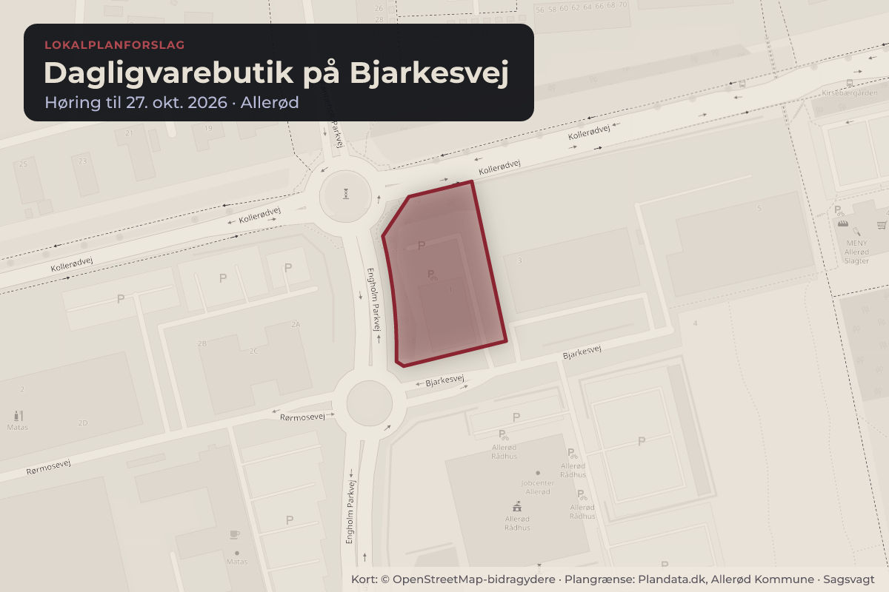
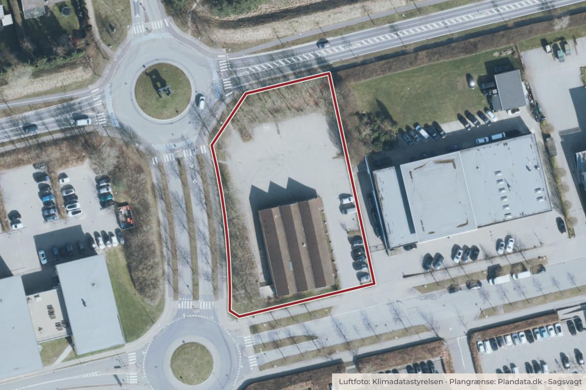

Besluttet 20. august, Økonomiudvalget, Allerød
Forslag til lokalplan 2-323 for en dagligvarebutik ved Bjarkesvej

Kort: © OpenStreetMap-bidragydere. Plangrænse: Plandata.dk, Allerød Kommune.

Kort fortalt
- Hvem
- Økonomiudvalget, Allerød Kommune
- Hvornår
- Torsdag 20. august 2026
- Status
- Besluttet. Økonomiudvalget indstiller til byrådet: 1. Forslag til lokalplan nr. 2-323 for en dagligvarebutik ved Bjarkesvej og forslag til kommuneplantillæg nr. 2 sendes i otte ugers offentlig høring. 2. Der afholdes et borgermøde i løbet af den offentlige høringsperiode.
Er noget forkert her? Skriv til os
Læs hele sagen Kommunens egen tekst
Baggrund
Økonomiudvalget besluttede den 9. september 2025 at igangsætte udarbejdelsen af en ny
lokalplan for dagligvarebutik ved Bjarkesvej samt et tilhørende kommuneplantillæg.
Baggrunden for lokalplanen er et ønske om at erstatte den eksisterende, nedlagte
dagligvarebutik med en større og mere tidssvarende butik samt at forbedre adgangs- og
trafikforholdene i området.
Forud for igangsættelsen af lokalplanarbejdet blev borgere fra nærområdet inviteret til et
indledende input- og procesmøde d. 13. august 2025. Flere input fra mødet er behandlet med
forslaget herunder spørgsmål om tilgængelighed. Bl.a. fastsættes en bestemmelse om
etablering af et gangareal fra Kollerødvej til bebyggelsen, der skal sikre tilgængeligheden for
bløde trafikanter.
Ved den endelige vedtagelse af lokalplanen ophæves en del den eksisterende lokalplan 245A
Engholm af den 15. juni 1999 for arealet der berører matr. 6bf Kollerød By, Lynge.
Lokalplanens indhold
Lokalplanområdet omfatter matr. 6bf Kollerød By, Lynge og udgør et areal på ca. 3.300 m 2 i
Engholm Erhvervsområde.
Med lokalplanforslaget fastlægges områdets anvendelse til detailhandel i form af én
dagligvarebutik med et bruttoetageareal på op til 1.200 m².
Planen giver mulighed for:
en bebyggelsesprocent på op til 40 %
bebyggelse i én etage med en maksimal bygningshøjde på 8,5 meter
etablering af forbedrede vej- og adgangsforhold, herunder ny overkørsel til Engholm
Parkvej for varelevering
funktionel adskillelse mellem kunde- og varetrafik
Lokalplanen sætter desuden en række bestemmelser om områdets fysiske udformning og
funktion. Bebyggelsen skal fremstå som en samlet arkitektonisk helhed, der er tilpasset
erhvervsområdets karakter. Facader skal primært opføres i blankt murværk i afdæmpede
nuancer, suppleret med elementer i træ og glas, som bidrager til variation og åbenhed særligt
ved indgangspartierne.
Enkelte udvalgte træer inden for lokalplanområdet skal bevares således, at området fortsat
omkranses af grønne elementer og der fastsættes bestemmelser for krav om beplantning.
Udendørs belysning skal placeres og udformes i henhold til kommunens belysningsplan efter
nærmere fastsatte bestemmelser, som skal sikre mod genevirkninger for beboere og naboer.
Herudover er der indarbejdet mulighed for en særskilt overkørsel til Engholm Parkvej til
udkørsel for tung trafik. Dette skal bidrage til at reducere de interne krydsninger og understøtte
en mere trafiksikker disponering af arealerne.
Lokalplanen fastsætter en parkeringsnorm på 1 parkeringsplads pr. 25 m 2 butiksareal, heraf
skal mindst to af pladserne dimensioneres som handicapparkering.
Kommuneplantillæg
En ny dagligvarebutik inden for planområdet indebærer en forhøjelse af
bebyggelsesprocenten, som kræver et tillæg til kommuneplanen. Kommuneplantillægget
muliggør en bebyggelsesprocent på 40 %, hvilket erstatter den nuværende ramme 33 %
fastsat i kommuneplanrammen EN.E.01 – ”Engholm Erhvervsområde”. Samtidig ændres den
specifikke anvendelse til dagligvarebutik. De øvrige rammebestemmelser fastholdes.
Screening for miljøvurdering
Der er foretaget en screening for krav om miljøvurdering af forslaget til lokalplanen og
kommuneplantillægget. Det er vurderet, at planforslagene ikke muliggør ændringer, der kan
medføre miljømæssige påvirkninger af et væsentligt omfang. Afgørelsen offentliggøres
sammen med lokalplanforslaget og kan påklages indtil fire uger fra offentliggørelsen.
Behandling i Miljø-, Erhvervs- og Byudvalget 11. august 2026
Udvalget indstiller til Økonomiudvalget og byrådet at:
1. Forslag til lokalplan nr. 2-323 for en dagligvarebutik ved Bjarkesvej og forslag til
kommuneplantillæg nr. 2 sendes i otte ugers offentlig høring.
2. Der afholdes et borgermøde i løbet af den offentlige høringsperiode.
Beslutning
Økonomiudvalget indstiller til byrådet:
1. Forslag til lokalplan nr. 2-323 for en dagligvarebutik ved Bjarkesvej og forslag til
kommuneplantillæg nr. 2 sendes i otte ugers offentlig høring.
2. Der afholdes et borgermøde i løbet af den offentlige høringsperiode.
Bilag
- Forslag til lokalplan 2-323 og miljøscreening er vedlagt som bilag 1.
- Forslag til kommuneplantillæg nr. 2 til Allerød Kommuneplan 2025 er vedlagt som bilag 2.
- Administrationens forslag
- Forvaltningen anbefaler at udvalget indstiller til Økonomiudvalget og byrådet at:
- 1. Forslag til lokalplan nr. 2-323 for en dagligvarebutik ved Bjarkesvej og forslag til
- kommuneplantillæg nr. 2 sendes i otte ugers offentlig høring.
- 2. Der afholdes et borgermøde i løbet af den offentlige høringsperiode.
- Dialog/høring
- Forslag til lokalplan og kommuneplantillæg sendes i offentlig høring i otte uger. Planforslagene
- udsendes via e-boks til ejere/lejere i det høringsområde som fremgår af lokalplanforslaget og
- offentliggøres på kommunens hjemmeside. Høringssvar vil blive forelagt i forbindelse med den
- endelige vedtagelse af planerne.
Kilde: Allerød Kommune, Økonomiudvalget, referat fra mødet torsdag 20. august 2026, punkt 21. Læs den originale sag hos kommunen.